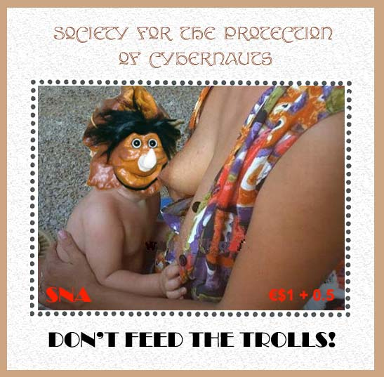

|
FOR THE SOCIETY FOR THE
PROTECTION OF CYBERNAUTS
Don't Feed the Trolls Issue
The SNAPO has accepted the demand for help
coming from the Society for the Protection of Cybernauts (SPC). It has
issued on the July 25, 2003 a sheet with an appropriate subject. The surtax
goes directly to the SPC and will be used by it for the protection of its
members. The first goal of the SPC is to create and to develop an extensive
Web site.
The sheet shows a baby troll, who, thanks
to a proper feeding, will attaint the adult age after only 2-3 comments.
More about trolls can be found out by reading the article published below.

The Psychology of Trolls
Once upon a time, there existed creatures called Trolls, or so the legends
and folktales say. According to my reference works on these subjects, Trolls
of Scandinavian folklore are usually huge ogres with great strength and
little wit. The most famous tales of them have them lurking under bridges to
demand payment of those who would cross, killing those who would make the
attempt without paying the toll. Later, so the texts say, the stories told
that they shrank to a smaller, dwarfish folk who inhabited caves.
Eventually, they apparently left our world altogether, and were never seen
or heard from again.
But those reports are wrong, for Trolls do indeed exist, even today. They
are alive and well and wreaking new havoc on the Internet.
Do you wish to enter a chatroom or participate on a message board? Beware
the Trolls! They will appear when you least expect it, and demand a
different kind of payment from you. They will assail you with insults,
obscenities, and anything offensive they can think of to get you give them
what they really want: attention. They will keep up these attacks to watch
you cry out in protest and pain, and the more you do so, the more they will
keep it up. That's what they really want, after all: a reaction, any
reaction, for that is the coin by which they measure their success. The more
they receive, the more they will continue the behavior that is giving them
what they want. That it upsets others is of no concern to them -- or,
rather, it is of primary concern for them, for upsetting people is their
business.
Like the Trolls of old, they seem to have great strength, given the kinds of
trouble they can cause; but ultimately, also like the Trolls of old, they
have little wit. They all use the same tactics, and they all resort to the
same ways of provoking people. First insult members of the chatroom or board
by calling them names, ridiculing their comments and questioning their
intelligence. Then start insulting the subject for which the board or
chatroom was created. If that doesn't get enough reaction, start upping the
ante by bringing in completely unrelated subjects. Tell the other
participants that they (or the subject under discussion) are prejudiced
racially, sexually, ethnically, religiously -- take your pick, they'll
eventually hit 'em all, and then go for the jugular: doing all this while
throwing in obscene language and casting other foul aspersions on anyone who
happens to be within range. This is, of course, incredibly inflammatory
behavior to any marginally civilized person, and a normal sense of justice
and fair play naturally demands defense and protest.
Which is exactly what the Troll is hoping for, because they don't play fair.
They don't care about the same things that brought the other participants to
the site; they only want to get people riled up and see the trouble they
created so they can feel big and strong and powerful because they created
such a fuss. And while they're watching the outrage and anger fly, they're
sitting under the bridge, laughing while they chew on the bones of their
victims. All that public indignation has served only one purpose: it fed the
Troll's hunger for power and made him happy. It certainly did nothing for
the people who got upset.
Tales tell us that warning signs were put up near bridges where Trolls were
believed to be living, to keep unsuspecting folk away so that they would not
be robbed or killed. You could not cross that bridge without losing either
your money or your life, so it was better to turn around and ignore that
bridge. Not especially convenient if that was one of few bridges around and
you needed to get to the other side, but eventually, the Troll would either
starve to death or leave, and the bridge would be safe again. Until the next
Troll moved in, and then the same warnings and behavior would apply.
Simply put, Trolls are bullies. They are at heart small and mean people who
have a need to make themselves feel big and strong, and the easiest way they
can find to do that is by mistreating other people and taking pleasure in
their pain. It's not healthy, but it's also not something that will be made
better by giving in to the bully. It is far better to walk away from him, to
ignore him, and even suffer a few punches rather than give him what he wants
by crying and begging for mercy or even fighting with him. If you are not a
"good victim," he will look elsewhere to get what he wants. And ultimately,
if direct action needs to be taken against any bully, it has to come from
the proper authorities: in the case of school bullies, the administration
and faculty, or even the police, in the case of Internet bullies, the
persons on the site who have the power to block or remove their inflammatory
and offensive remarks.
Because if you look closely at what these Internet Trolls say, you will
eventually see the truth: They may look like big nasty ogres, but theyre
really just sorry little people hiding in their dark caves, coming out to
make mischief before running back into hiding where they can watch the
trouble they made and laugh all alone in the dark. They're emotional
terrorists. Ignoring them isn't easy because it hurts to see them say and do
things designed to make people feel upset and angry, but it's the only thing
that will make them go away. Ignoring them completely creates an environment
that simply does not give them what they're looking for. It's like soaking
the woodpile with water: when the match comes along looking for something to
burn, it wont catch, so it must go elsewhere to have its fun. But everyone
must turn their backs and not respond, or the Troll will have the hope that
if he keeps at it and tries hard enough, he'll get a big enough reaction to
start a real fire.
Be it a Troll under a bridge or a Troll on the Internet, the warning sign is
the same:
Do not feed
the trolls
|